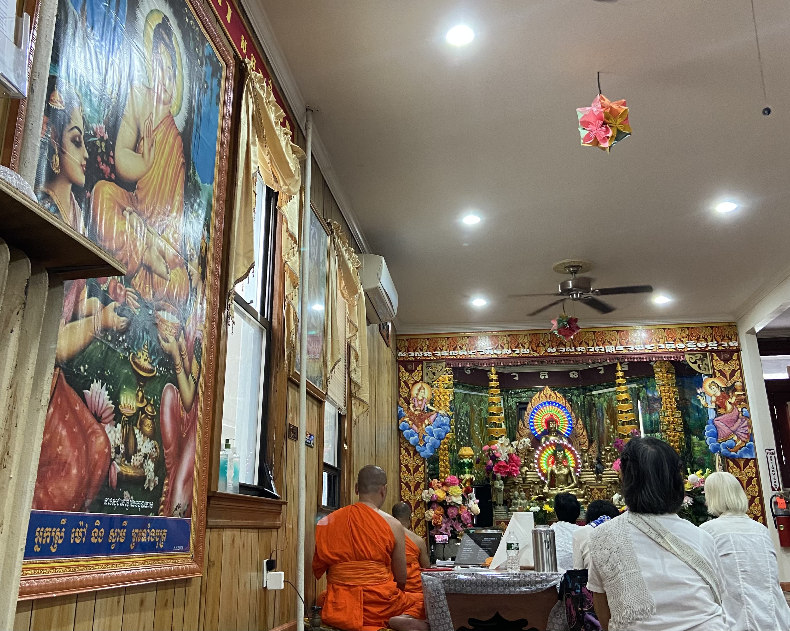

How Cambodian Americans prove how the AAPI community is not a monolith
The Model Minority Myth fails to represent the most vulnerable communities in the U.S.
By: Aina Izham

Cambodian Americans celebrating Pchum Ben, a 15-day holiday in the Cambodian Buddhist calender at Wat Jotanaram, Bronx, New York. Credit: Aina Izham.
Asian Americans are projected to be the nation’s largest immigrant group by the middle of the century according to the Pew Research Center, and yet not everyone in this community faces the same challenges as others. Many different subgroups under the Asian American and Pacific Islander community that face way more problems than others show how not everyone will face the same problems due to their privileges. A lot is to blame the Model Minority Myth that contributed to the assumption that all Asian American and Pacific Islander people can receive education, and get a high-paying job when that’s completely false.
A good example would be the Cambodian community in the U.S., who are deeply underreported and misrepresented in the country over the disparities they face compared to Asians and Americans in the country.
Disparities that Cambodian Americans face include:
POVERTY
Cambodian Americans are closer to the poverty line compared to Asians according to reports by the Pew Research Center in 2019. Cambodians which include both foreign and U.S. born make up 13% while Asian and all Americans are 10% and 13% respectively.
EDUCATION
Cambodians that were able to complete college and earn a bachelor’s degree are lower than Asians in the U.S. as well. 21% of the U.S. born and 14% of foreign-born were able to receive a bachelor’s degree compared to 30% of all Asians. While for postgraduate degrees, 5% of Cambodian Americans have completed a postgraduate compared to 24% of Asians and 13% of all Americans.

ENGLISH PROFICIENCY
Proficiency can make a huge difference when it comes to applying for a job, handling financial documents and applications, and just basic social skills beyond the household and those who do not have the skills are usually socially isolated. Foreign-born versus U.S. born Cambodians have a huge difference in English proficiency, making up 43% and 91% respectively. However, 63% of Cambodian Americans are proficient, while all Asians are 72%.